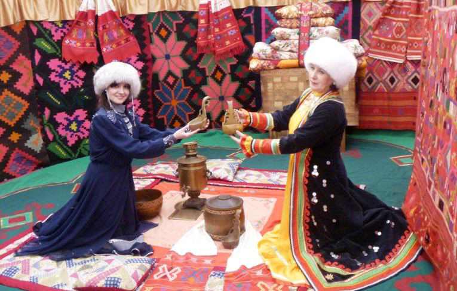
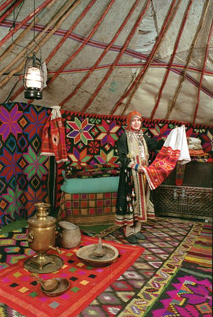
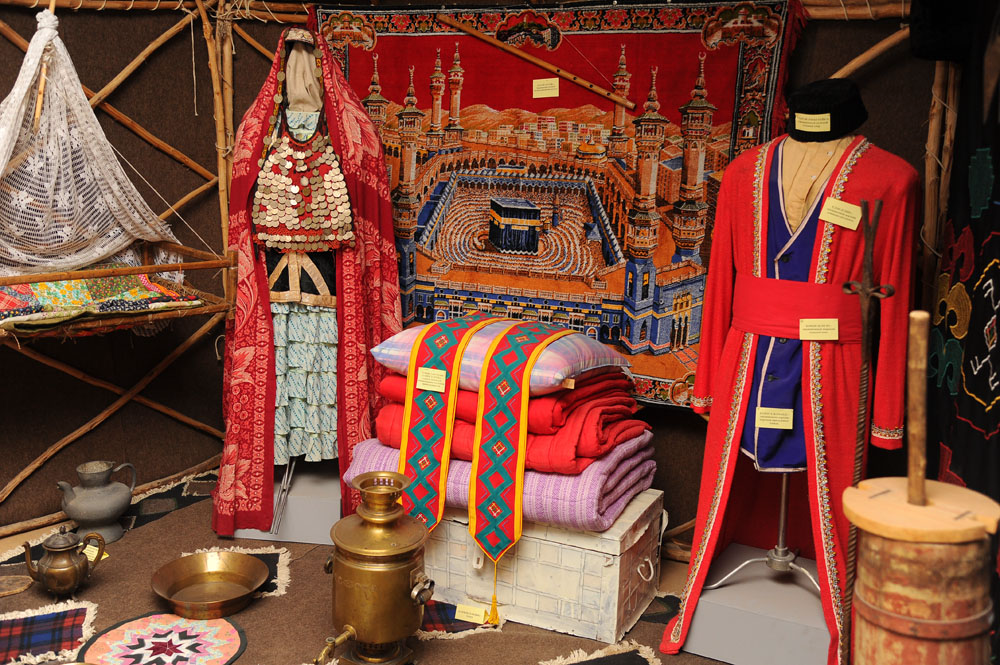

Вся визуально-культурная база региона в одном месте: орнамент кускар, тамбурная вышивка,
цветок курая, знамя Салавата, серебро и кораллы, юрта, петроглифы Шульган-Таш (16–20 тыс. лет, ЮНЕСКО-2025),
Иремель и бортевой мёд.
05-yurta-byt/vyshivka-torsok-lenty.pngВышитые ленты и занавеска (торско): кускар-мотивы на красном и тёмном поле, бахрома (Башэнциклопедия)

05-yurta-byt/yurta-interer-chaepitie.pngРеконструкция чаепития в юрте: самовар, ковры с кускаром, женщины в костюмах

05-yurta-byt/yurta-interer-kostyum.pngИнтерьер юрты: решётки кереге, ууки, яркие кускар-килемы, женщина в костюме с нагрудником (Башэнциклопедия)

05-yurta-byt/yurta-interer-muzey-eksponaty.pngМузейная экспозиция в юрте: костюмы, сундук с одеялами, тканые ленты, самовар, посуда05-yurta-byt/yurta-kochevaya-dver.pngКочевая юрта в горах с деревянной дверью05-yurta-byt/yurta-muzey-expoziciya.pngМузейная юрта с открытым каркасом (ууки, шанрак) и убранством05-yurta-byt/yurta-s-ornamentom-hd.pngЮрта в степи крупным планом, HD: войлочное покрытие, шанрак, орнаментированная лента по низу, узорная дверь05-yurta-byt/yurta-step-gory.pngЮрта в предгорной степи на закате с пасущимися животными05-yurta-byt/yurta-ustroystvo-shema.pngРазвёрнутая схема-инфографика внутреннего устройства юрты (мужская/женская половины, предметы)05-yurta-byt/yurty-v-stepi-tri.pngТри юрты в открытой степи под большим небом
Шульган-Таш
Петроглифы 16–20 тыс. лет, ЮНЕСКО-2025
06-shulgan-tash/10__.pngКрупный фрагмент: лошадь + мамонт на серо-голубом камне (900×600, turlog.ru)06-shulgan-tash/1__.pngАэропанорама: скала с пещерой над излучиной Белой (1300×659, nashural.ru)06-shulgan-tash/2__.pngНаучная ч/б прорисовка-схема панели: расположение всех фигур (1000×545, rodina-history.ru)06-shulgan-tash/2__KP_RU.pngУщелье у входа: жёлтый мостик через ручей Шульган (1200×675, ufa.kp.ru)06-shulgan-tash/3__.pngИзлучина Белой, зелёные хребты (886×664, bashenc.online)06-shulgan-tash/4_Caving_Spelunking_Kapova_Shulgan.pngТа же панель, тёплый тон, чище кадр (600×386, xtremespots.com)06-shulgan-tash/4__.pngТаблица знаков Каповой пещеры: линии, «лесенки», треугольники, «шатры», антропоморфы; мужские/женские символы (1008×711, elementy.ru)06-shulgan-tash/5__.pngКлючевая панель: красная лошадь, мамонты, носорог, знак-«шатёр» (921×696, megalithica.ru)06-shulgan-tash/6__.pngСкалы над Белой с берега (604×386, сайт заповедника)06-shulgan-tash/6__74_.pngРедкая панель-«стадо»: лошадь, бык, верблюд, мамонт, антропоморф (800×528, ozersk74.press)06-shulgan-tash/7_Shulgan_Tash_Cave_Wikipedia.pngЛошадь и мамонт крупно, низкое разрешение (250×248, Wikipedia)06-shulgan-tash/7__.pngАрка входа в пещеру изнутри: зелёный мох, тропа, люди (1000×667, uraloved.ru)06-shulgan-tash/8_Kapova_Cave_Paintings_Russia_Location.pngФрагмент с красными знаками (200×200, visual-arts-cork.com)06-shulgan-tash/9__.pngПанель целиком в тёмном зале, силуэт исследователя со штативом (1105×735, megalithica.ru)
Природа и памятники
Салават Юлаев, Иремель, мёд, кони
07-nature-landmarks/10__.pngИремель над каменной рекой (курумником) и ельником, драматичное небо (1000×667, uraloved.ru)07-nature-landmarks/11_Iremel_winter_ruwiki.pngКлассический вид на Большой Иремель (600×450, ruwiki)07-nature-landmarks/12_bortevye_soty_unesco.pngСоты бурзянской пчелы в борти, пчёлы крупно (800×530, unesco.ru)07-nature-landmarks/13_bashkir_horse_wiki.pngРыжий жеребец башкирской породы в движении на лугу (1000×684, Wikipedia)07-nature-landmarks/14_Iremel_zima_aerial.pngЗимняя аэросъёмка: белая гора, заснеженный лес, арт-объект «Иремель» (1680×1259, travelvillage.ru)07-nature-landmarks/15_bort_koloda.pngБорть (дупло) в живом дереве, Шульган-Таш (400×260, beejournal.ru)07-nature-landmarks/16_Iremel_autumn.pngИремель в снегу над осенними берёзами (800×600, trfa.ru)07-nature-landmarks/17_Iremel_snow_slope.pngСнежный склон и курумы в облаках (1024×683, snova-v-dorogu.ru)07-nature-landmarks/18_bashkir_horse_stallion.pngТёмный жеребец в стойке, экстерьер породы (640×433, fermilon.ru)07-nature-landmarks/19_Agidel_Belaya_uraloved.pngБелая (Агидель): излучина в зелёном каньоне (1000×667, uraloved.ru)07-nature-landmarks/1__.pngПамятник Салавату Юлаеву на фоне закатных облаков и Белой (968×544, kommersant.ru)07-nature-landmarks/20_Agidel_Belaya_bend.pngПанорама большой излучины Белой с сосной на переднем плане (1200×800, geoglob.ru)07-nature-landmarks/21_Agidel_map.pngКарта бассейна Белой по Башкортостану (867×933, geoglob.ru)07-nature-landmarks/22_tabun_winter.pngТабун в снежной пыли, всадник-пастух (900×619, russian.news.cn)07-nature-landmarks/23_tabun_steppe.pngТабун серых лошадей на золотом лугу, контровой свет (870×486, belta.by)07-nature-landmarks/2__.pngСиние дали хребтов с цветущим лугом (1188×792, cpufa.com)07-nature-landmarks/3__.pngПредгорный луг и зелёный холм (1181×809, bashenc.online)07-nature-landmarks/4__14_09_25_06_16_.pngБортник срезает дикие соты ножом, крупный план (1280×720, pikabu)07-nature-landmarks/4__Tripadvisor.pngВид с высоты: парк, излучина Белой, монумент на краю (1200×1124, tripadvisor)07-nature-landmarks/5__.pngСкальный хребет Иремеля: лишайниковые камни, ели (1280×851, nashural.ru)07-nature-landmarks/5__29_.pngЗелёный цветок курая + завиток орнамента, вектор (915×915, foni.papik.pro)07-nature-landmarks/6__.pngОзеро у горы Манарага, панорамный формат (500×250, nashural.ru)07-nature-landmarks/7__.pngТуристка на вершине, панорама хребтов (1024×768, na-bannoe.ru)07-nature-landmarks/7__29_.pngКурай в круге, золотой (606×610, foni.papik.pro)07-nature-landmarks/8__.pngКлассический вид на монумент снизу: конь на скале-пьедестале (1280×1512, Wikipedia)07-nature-landmarks/9__.pngКобыла с жеребёнком на водопое: тема кумыса (450×300, agropost.ru)
Современное и эпос
Курай-эмблемы, полосы узора, Урал-батыр, арабица
08-modern-branding/10__quot_quot_.pngДетская иллюстрация к «Урал-батыру»08-modern-branding/12__27_.pngКурай + подпись «Башкирский узор», зелёный08-modern-branding/1__.pngТаблица алфавита башкирской арабской графики (Башкирская энциклопедия)08-modern-branding/1__Fandom.pngЛоготип «Курай-ТВ»08-modern-branding/3__.pngЖивописная иллюстрация к эпосу «Урал-батыр» (Башэнциклопедия)08-modern-branding/4__1_Images_Behance.pngСтарославянская вязь-каллиграмма (НЕ башкирская)08-modern-branding/5__.pngАлфавит 1923 г. + страница рукописи арабицей08-modern-branding/5__ArtNow_ru.png«Урал Батыр на крылатом льве», акварель (Т. Витакова)08-modern-branding/6_Russian_calligraphy_Lettering_8_Images.pngРусская каллиграфия золотом по синему (НЕ башкирская)08-modern-branding/6__.pngТаблица начертаний букв (начальные/срединные/конечные)08-modern-branding/7__11_Magnific_Freepik_.pngФрактальный «восточный» паттерн (НЕ аутентичный)08-modern-branding/7__29_.pngЦветок курая — зелёный вектор на прозрачном фоне, крупно (915×915)08-modern-branding/8_Kurai_Flower_Symbol_Flag_On_Flag.pngЖёлтый курай в круге (как на флаге)08-modern-branding/8__.pngСредневековая арабская рукопись с ковровым орнаментом08-modern-branding/9__Deziiign.pngЦветные орнаментальные полосы-раппорты башкирского узора